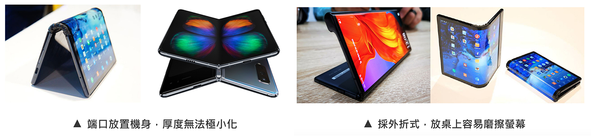

Brief
小米客戶想做可撓式螢幕裝置，分別提出7/8/10三種吋數，請我們提出Proposal。
沒有明確的目標族群，以及想主打的TA，所以主要針對三種吋數分析其利弊。
最後針對我們較為熟悉的筆電吋數下手，並提出兩個Concept方向給客戶。
Target
Role
帶領ID同仁執行前期研究，從市場現況調研、競品分析、痛點分析、原型/易用性測試等等方法進行研究
Pain Point
市場現況與競品分析
市面上已經存在許多可撓式螢幕裝置產品，但在外觀厚度、螢幕尺寸大小，甚至是價格都不盡相同。且多數都是以手機/平板轉換為主，以及採取鉸鏈式的轉軸設計，因此折疊後，側面產生水滴狀空間，難以變薄，外觀上也相對沒那麼簡潔。
我們的詮釋
所以現在看到市面上的產品痛點，也就是我們的機會點。我們製作了不同吋數的原型進行易用性測試，針對螢幕摺法(向內/向外) 、鏡頭、功能按鍵配置等不同面向進行痛點/需求分析
最終以大尺寸(10/14吋)下去發展的原因：
Highlight
針對軸設計及開闔固定方式，提出解決方案：
開闔固定方式解法

轉軸設計解法
因此，我們就此展開了兩個Concept方向：
Concept A
Concept B
此外，我們也針對可撓式螢幕的UI介面操作，進行設計發想：
專利取得
一、用於折疊裝置之支架及具有所述支架之折疊螢幕裝置
二、用於折疊裝置之轉軸機構及具有轉軸機構之折疊螢幕裝置
Process Point
Self-Review
目標族群需定義更清楚
因為時程較趕的關係且客戶已定義尺寸，所以過程中沒有針對吋數做過多的研究跟質疑，以致於這樣的產品要賣給什麼樣貌的用戶族群是未知的。因此，若能有再一次機會，希望可以針對這部分做補足。
更有統整性的競品分析
因為在做此專案時，市面上並沒有相對成熟的產品，多半是樣品機居多，且是以小吋數的可撓螢幕為主要發展。所以在時間相對有限的情況下，競品分析並沒有做得非常徹底。因此，如果有更多時間的情況下，希望競品分析可以做得更有統整性及深度。